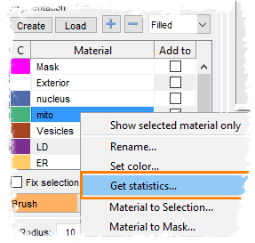

Did you know...
- Highlight material of interest in the Segmentation table
- Press the right mouse button to start a popup menu
- Select the Get statistics... option
|  |
When a model with material is created it is possible to quantify the objects with this material:
|